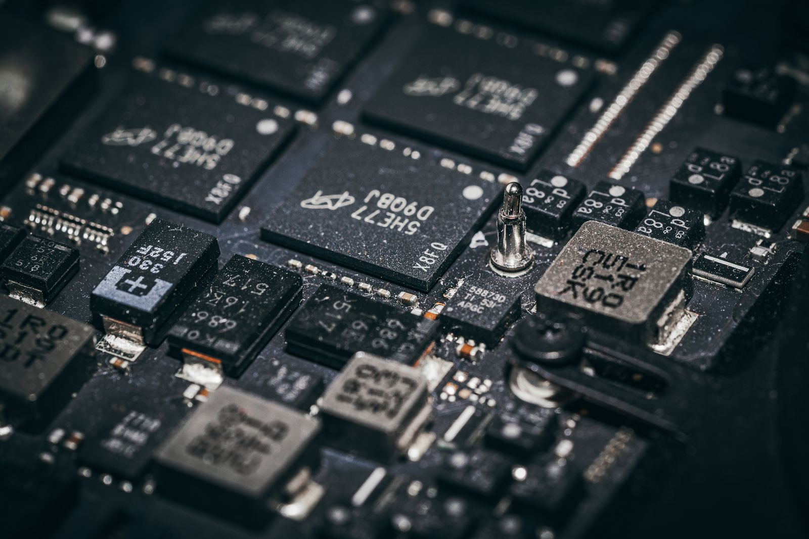

BENCH LOG · FERRANTE NEUROMORPHIC ENGINEERING · TURIN
Spikes are cheap. Benchmarks are expensive.
I am Dr Lucia Ferrante, a neuromorphic engineer. I design spiking-neural-network systems on event-driven hardware for edge sensing, robotics and research clients — and I measure them before I believe them. The honest starting point, printed here rather than in a footnote: neuromorphic energy wins are workload-dependent. On sparse event data the win can be enormous. On dense data it can vanish, or invert. Most published comparisons are run by the people selling the chip; mine are run by the person you would blame. Some of my engagements end with the advice to use a conventional accelerator. They are billed the same.

The spike budget
RUNS ON TABLE H1, BELOWEvery engagement starts with this arithmetic, exactly as printed in my reports. Total spikes S = N × r̄ × t — neurons times mean firing rate times duration. Energy E ≈ S × e, where e is the per-spike figure for the hardware class, taken from Table H1. Average power is E ÷ t. The comparison baseline is printed, not implied: a duty-cycled conventional accelerator module measured at 6.2 mW average on the equivalent frame-based pipeline (bench report R-11, harness H-3, module wall-plug). Pick a class, set the network, and watch what the firing rate does to the conclusion.
| Class | Hardware | e — pJ / spike | Measurement basis (printed, always) |
|---|---|---|---|
| NM-A2 | Mixed-signal neuromorphic SoC, product board | 640 | System-effective: event sensor front-end, chip and host interface included, harness H-3, mean of 9 runs. The figure a product actually lives on. |
| NM-D1 | Digital neuromorphic processor, research board | 1,900 | System-effective on harness H-3, host included. The vendor's chip-only figure for this class is 26 pJ — true, and not the number that runs a product. |
| NM-M4 | Memristive crossbar prototype | 210 | Array plus minimal peripherals only. Prototype hardware, one bench, small sample — read as a lower bound with good public relations. |
HARDWARE CLASS · FROM TABLE H1
NETWORK SIZE · NEURONS
MEAN FIRING RATE r̄
DURATION t
WORKINGS · EVERY LINE PRINTED
BASIS, PRINTED: per-spike figures are system-effective measurements from Table H1 (sensor front-end and host included), not chip-only datasheet minima. The baseline is a duty-cycled conventional module at 6.2 mW average, measured on the same harness — an always-on baseline would flatter the spiking system by another order of magnitude, which is exactly the trick this page exists to refuse.
Services register
WHAT CAN BE BOOKED| Ref | Service | Client type | System / class | Status |
|---|---|---|---|---|
| S.01 | Workload definition & sparsity audit Your event data, recorded and characterised before anyone says the word chip. | Edge-sensing OEMs | Any event source | Booking — next slot January |
| S.02 | Benchmarking & measurement harness Your workload, both architectures, one harness, printed bases. | Research labs, hardware teams | Harness H-3 | Booking |
| S.03 | SNN design & porting Network design and ANN-to-SNN conversion, with the conversion cost measured, not assumed. | Robotics, sensing products | NM-A2 / NM-D1 class | Waitlist — February |
| S.04 | Hardware selection & bring-up Class selection against the measured workload; bench bring-up and first light. | Product teams | Bench | Booking |
| S.05 | The verdict engagement One fixed-fee week answering a single question: should this be neuromorphic at all? | Anyone holding a slide deck | — | Always open |
“Lucia measured first and argued later. The spiking node ran a picking aisle for a year inside the power budget she printed in week two — and when our second site turned out to be too busy for the same trick, she told us to buy the conventional module, and showed us her own numbers for why.”
Head of Sensing · European logistics-automation OEM · attached to File 01 — The aisle that mostly sleeps (projects page). The 80.7× figure quoted in that file is the default configuration of the spike budget in Entry 01 — run it yourself.
Fee shape & estimator
TABLE F1 · RATES AS PRINTEDRates are published because a benchmark you cannot price is a rumour. The estimator below is the same arithmetic used on real quotes — a planning figure, not a contract.
| Line | Rate | Basis |
|---|---|---|
| Design & workload days | €1,350 / day | Workload definition, sparsity audit, network design. |
| Benchmark days | €1,150 / day | Harness time, both architectures, measurement and write-up. |
| Written verdict report | €900 fixed | The report your design review can quote. Included in every benchmark. |
| Hardware loan pool | €480 / engagement | Evaluation boards from the bench pool, insured, when the work needs them. |
| The verdict engagement (S.05) | €4,800 fixed | One week, one question. The same price whether the answer is yes or no. |
WHAT MOVES THE PRICE
Workload definition and measurement depth, in that order. A workload we have to record from scratch costs days; a benchmark run to design-review standard costs more than one run for a slide. Travel outside the EU is billed at cost, agreed in advance.
WHAT NEVER MOVES THE PRICE
The conclusion. A report that ends “use a conventional accelerator” costs exactly what a report that ends “ship the spiking system” costs. The practice takes no hardware commissions and resells nothing — a verdict you can buy is not a verdict.